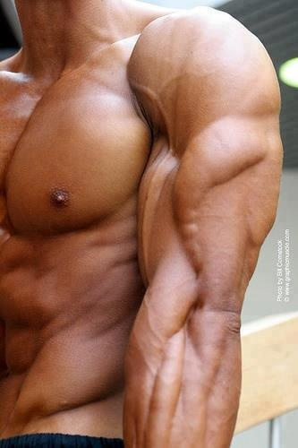

<!DOCTYPE html>
<meta http-equiv="content-type" content="text/html;charset=UTF-8" />
<head>
    <title>Impins la piet cu bara | HealthyZ</title>
    <meta property="og:site_name" content="Strength Coach Glasgow" />
    <meta http-equiv='cache-control' content='no-cache' />
    <meta http-equiv="Content-Type" content="text/html; charset=utf-8" />
    <meta name="viewport" content="width=device-width, initial-scale=1.0" />
    <link id="wsite-base-style" rel="stylesheet" type="text/css" href="../../cdn2.editmysite.com/css/sites9be7.css?buildTime=1561486651" />
    <link rel="stylesheet" type="text/css" href="../files/main_stylef74e.css?1561485939" title="wsite-theme-css" />
    <link href='http://fonts.googleapis.com/css?family=Montserrat:400,700&amp;subset=latin,latin-ext' rel='stylesheet' type='text/css' />
</head>
<body class="header-page  wsite-page-blog wsite-blog-post  full-width-body-off header-overlay-on alt-nav-on  wsite-theme-light">
    <div class="wrapper">

        <div class="banner-wrap">
            <div class="wsite-elements wsite-not-footer wsite-header-elements">
                <div class="wsite-section-wrap">
                    <div class="wsite-section wsite-header-section wsite-section-bg-image wsite-section-effect-parallax" style="height: auto;background-image: url(_/uploads/1/2/3/3/123320581/background-images/1565318044.html);background-repeat: no-repeat ;background-position: 50% 50% ;background-size: 100% ;background-color: transparent ;background-size: cover;background-attachment: fixed;">
                        <div class="wsite-section-content">
                            <div class="container">
                                <div class="banner">
                                    <div class="wsite-section-elements">
                                        <div class="wsite-spacer" style="height:50px;"></div>

                                        <h2 class="wsite-content-title">Antrenamente | Nutritie</h2>

                                        <div class="wsite-spacer" style="height:50px;"></div>
                                    </div>
                                </div>
                            </div>

                        </div>
                        <div class=""></div>
                    </div>
                </div>

            </div>

        </div>

        <div class="main-wrap">
            <div class="wsite-section-content">
                <div class="container">
                    <div class="wsite-elements wsite-not-footer">
                        <table id="blogTable" class="wsite-not-footer" style="border: 0; width: 100%; table-layout: fixed">
                            <tr>
                                <td valign="top">
                                    <div id="815468006538632597-blog" class="blog-body" style="float: left;">
                                        <div id="wsite-content">
                                            <div id="blog-post-205195184828542372" class="blog-post">

                                                <div class="blog-header">
                                                    <h2 class="blog-title">
					<a class="blog-title-link blog-lin">Ce trebuie sa stii cand esti in perioada de definire musculara?</a>

			</h2>
                                                    <p class="blog-date">
                                                        <span class="date-text">
		2/25/2019
	</span>

                                                    </p>
                                                    <p class="blog-comments">

                                                    </p>
                                                </div>

                                                <div class="blog-separator">&nbsp;</div>

                                                <div class="blog-content">
                                                    <div>
                                                        <div class="wsite-image wsite-image-border-none " style="padding-top:10px;padding-bottom:10px;margin-left:0px;margin-right:0px;text-align:center">
                                                            <a>  </a>
                                                            <div style="display:block;font-size:90%"></div>
                                                        </div>
                                                    </div>
                                                    <div class="paragraph">Iti place sa mergi la sala. Iti place sa te provoci si probabil iti place sa iti bati recordurile anterioare si sa simti muchii pompand dupa. Si probabil ca nu prea iti place sa faci exercitii cardio si de cele mai multe ori de eschivezi de la ele. Traiesti cu impresia ca exercitiile aerobe nu fac decat sa arda muschii pe care te-ai straduit atat de mult sa ii construiesti? Ei bine, afla ca daca respecti cateva reguli de baza, acest lucru nu numai ca nu se va intampla, dar valoroasa musculatura va fi chiar mai bine definita!<br><br>

Daca dezvoltarea masei este singurul tau scop, in ceva timp e posibil ca nimeni sa nu mai poata face diferenta intre deltoizii tai si trapez. Ideal este sa ai un fizic svelt si cizelat, iar pentru asta ai nevoie de cardio. Nu, nu de alergari kilometrice! Relax!<br><br>

Plus ca nu trebuie omis faptul ca exercitiile cardio ne intaresc si inima (desi mie parca mi-ar pocni la anumite sesiuni de alergare :) ). Iar o inima sanatoasa va fi mai eficienta in a transporta sangele si oxigenul catre, da, muschii tai. Cu cat este mai puternica inima, cu atat ii sunt mai puternice si contractiile, asta insemnand ca mai mult sange oxigenat va fi pompat cu fiecare bataie.<br><br>

O sa-mi permit sa fac cateva sugestii la care poate nu te-ai gandit si care sper ca iti vor fi de folos. Daca deja le-ai incercat, atunci poti sa impartasesti din experienta ta si sa mai combati mentalitatea conform careia cardio arde neaparat masa musculara. Nu va fi mult cardio si in general va fi intens, perfect pentru un culturist.<br><br>
                                                    
 Regulile antrenamentului<br><br>
Respecta urmatoarele 5 reguli simple in ce priveste antrenamentul tau:<br>

Regula 1. Schimba-ti in mod regulat forma de cardio<br>
Orice culturist care se respecta isi schimba antrenamentul cu greutati periodic. Si daca nu o face, ar trebui! Atunci de ce nu am schimba si frecventa, intensitatea si durata antrenamentelor cardiovasculare?<br><br>

In perioada de dezvoltare a masei musculare, incearca sa iti pastrezi exercitiile aerobe la nivel scazut. Sa zic, cam o data maxim doua sesiuni pe saptamana, cu o durata de 15-20 de minute. Acest lucru va limita consumul de energie, iar organismul se va concentra pe dezvoltarea musculara exclusiv.<br><br>

Cand incerci definirea, mareste-ti numarul sesiunilor de cardio la vreo 2-4 antrenamente pe saptamana, pentru eliminarea grasimii in exces.<br><br>

Retine totusi ca alternarea exercitiile de cardio este esentiala pentru a nu te plictisi – banda intr-o zi, eliptica in alta, antrenamentul la rowing machine este foarte eficient si chiar solicitant daca il faci cum trebuie, bicicleta stationara si ti-ai cam facut plinul de cardio!<br><br>

Regula 2. Separa antrenamentul cardio de antrenamentul cu greutati<br><br>
Multe persoane care ridica greutati se tem ca sesiunile de cardio le vor impiedica abilitatea de recuperare de dupa antrenamentele cu greutati. Acest lucru depinde insa de cand si cum faci cardio.<br><br>

Incearca pe cat posibil sa imparti zilele in zile de exercitii cardio si zile de exercitii cu greutati. In acest fel exercitiile cardio nu iti vor ingreuna cresterea in masa musculara. De exemplu, a face un antrenament intens de cycling dupa ce ti-ai epuizat picioarele cu niste squaturi sau niste fandari infernale, nu este chiar o idee buna daca scopul tau este sa iti creasca masa musculara a picioarelor. In schimb, fa mai bine cardio a doua zi sau chiar a treia, pentru a permite picioarelor sa se odihneasca.<br><br>

Daca insa te afli in situatia in care nu poti sa iti imparti zilele, atunci alege o forma de exercitii aerobe care nu pune accentul exact pe grupa musculara pe care tu ai ucis-o in urma antrenamentului cu greutati. Asadar daca alegerea ta este sa lucrezi la rowing machine, care lucreaza atat parte superioara a corpului, cat si picioarele, ai grija sa nu iti fi antrenat cu greutati partea superioada.<br><br>

Oricum ati alege, intotdeauna executa exercitiile cu greutati inainte. Nu vrei sa fii istovit inainte de a ridica macar doua greutati, vrei sa obtii cat de mult poti in urma rutinei tale de greutati, plus ca ridicatul de greutati cand esti obosit poate fi chiar periculos.<br><br>

Regula 3. Nu produce un impact puternic negativ<br><br>
Organismul tau se lupta suficient de mult pentru a repara micile leziuni provocate de catre ridicatul de greutati. Ultimul lucru de care ai nevoie este sa ii mai produci si alte "avarii" cu antrenamente cardio cu impact crescut.<br><br>

Concentreza-te pe cardio ce minimizeaza microtraumele – micile rupturi care se produc in fibrele musculare care fac parte din procesul de creare a noului tesut muscular. Alergatul pe suprafete foarte rigide precum asfalt sau ciment poate fi traumatizant pentru muschi si incheieturi. Saritul corzii poate avea aceleasi efecte negative.<br><br>

Cele mai bune alegeri de cardio cu impact redus ar fi inotul, cyclingul si bicicleta eliptica.<br><br>

Regula 4. Evita zona de "ardere de grasimi" (fat burning zone)<br>
Am tot auzit ca pana sa arzi grasimi trebuie sa treaca nu stiu cate minute, ca ar trebui sa te antrenezi timp de 20 de minute continuu. Alte mituri spuneau ca trebuie sa te antrenezi la o intensitate de 60-80% din maximul pulsului tau. Sub aceste valori era prea simplu, iar mai crescut insemna ca deja devine prea dificil pentru a utiliza grasimea drept combustibil.<br><br>

Ignora teoriile astea. Organismul tau utilizeaza per total mai multa energie cand se antreneaza la intensitati extrem de ridicate – aruncati un ochi la sprinteri, cred ca arata cel putin decent! Daca dai tot cei ai, scapi si cu o sesiuni mai scurta. Daca bagi un cardio superintens, poti termina chiar in 10-15 minute intregul antrenament.<br><br>

Incearca sa executi antrenamente pe intervale cu "explozii" de miscari la intensitate maxima urmate de perioade de recuperare activa. Aceasta abordare este mai buna atat pentru inima ta, cat si pentru reducerea tesutului adipos.<br><br>

Regula 5. Incerca sa pui mai multa rezistenta<br>
Schimba viteza catre una mai dificila la bicicleta, pune putina inclinatie pe banda, deexemplu. In acest fel iti creste intensitatea antrenamentului.<br><br>                                                   </div>
                                                   <div class="paragraph"><u><em>Exercitiu recomandat pentru:<br /></em></u>Incepatori: &#10004;&#65039;
                                                        <br />Avansati: &#10004;&#65039;
                                                        <br />&nbsp;
                                                        <br /><u><em>Sfaturi!<br /></em></u>
                                                        <ul>
                                                            <li>In primul rand trebuie sa realizezi o incalzire generala de 10-15 min, iar mai apoi sa reazlizezi o incalzire specifica, pentru fiecare grupa folosita, intre 10-15 min.</li>
                                                            <li>Incepe cu greutati mici la inceput, ca mai apoi sa cresti treptat greutatea.</li>
                                                            <li>Mereu fii concentrat si focusat pe ceea ce ai de facut la sala, lasand la intrare toate probleme si frustrarile, deoarece acestea iti vor diminua antrenamentul</li>
                                                            <li>Mereu cand nu esti sigur de un anumit exercitiu, intreaba un membru din cardul salii, sunt sigur ca te va ajuta.</li>
                                                            <li>Nu te lasa intimidat de ceilalti.</li>
                                                        </ul>
                                                    </div>
                                                    <div class="wsite-youtube" style="margin-bottom:10px;margin-top:10px;">
                                                        <div class="wsite-youtube-wrapper wsite-youtube-size-auto wsite-youtube-align-center">
                                                            <div class="wsite-youtube-container">
                                                                <iframe width="900" height="600" src="https://www.youtube.com/embed/7q2ILjeuGu0" frameborder="0" allow="accelerometer; autoplay; encrypted-media; gyroscope; picture-in-picture" allowfullscreen></iframe>
                                                                <br>
                                                                <br>
                                                            <iframe width="900" height="600" src="https://www.youtube.com/embed/wbIe0PtXC8E" frameborder="0" allow="accelerometer; autoplay; encrypted-media; gyroscope; picture-in-picture" allowfullscreen></iframe><br><br></div>
                                                        </div>
                                                    </div>
                                                    <div class="paragraph">Mai sus am atasat cateva video-uri explicative.
                                                        <br>
                                                    </div>
                                                    <h2 class="wsite-content-title" style="text-align:center;">Doresti mai multe informatii sau ajutor?</h2>
                                                    <div>
                                                        <div class="wsite-multicol">
                                                            <div class="wsite-multicol-table-wrap" style="margin:0 -15px;">
                                                                <table class="wsite-multicol-table">
                                                                    <tbody class="wsite-multicol-tbody">
                                                                        <tr class="wsite-multicol-tr">
                                                                            <td class="wsite-multicol-col" style="width:42.134831460674%; padding:0 15px;">
                                                                                <div>
                                                                                    <div class="wsite-image wsite-image-border-none " style="padding-top:10px;padding-bottom:10px;margin-left:0px;margin-right:0px;text-align:center"> 
                                                                                        <div style="display:block;font-size:90%"></div>
                                                                                    </div>
                                                                                </div>
                                                                            </td>
                                                                            <td class="wsite-multicol-col" style="width:57.865168539326%; padding:0 15px;">
                                                                                <div class="paragraph"><strong style="color:rgb(42, 42, 42)">Cu ce te putem ajuta?</strong>
                                                                                    <ol style="color:rgb(42, 42, 42)">
                                                                                        <li>Poti beneficia de un antrenor personal</li>
                                                                                        <li>Program nutritional customizat pentru tine</li>
                                                                                        <li>Sfaturi si participari la diferite dezbateri din cadrul sportului</li>
                                                                                        <li>Poti devenii un afiliat / partener</li>
                                                                                    </ol>
                                                                                </div>
                                                                            </td>
                                                                        </tr>
                                                                    </tbody>
                                                                </table>
                                                            </div>
                                                        </div>
                                                    </div>
                                                    <div class="paragraph"><span style="color:rgb(42, 42, 42)">Daca esti client nou, poti beneficia de diferite reduceri, la programe de antrenament si nutritionale, sau aducand un nou membru, poti castiga diferite produse promotionale.</span><span style="color:rgb(42, 42, 42)">&#8203;&#8203;</span></div>
                                                    <div style="text-align:center;">
                                                        <div style="height: 10px; overflow: hidden;"></div>
                                                        <div style="height: 10px; overflow: hidden;"></div>
                                                    </div>

                                                </div>

                                                <div class="blog-comments-bottom">

                                                </div>

                                                <div class="blog-post-separator"></div>
                                            </div>

                                            <a name="comments" id="comments"></a>
                                            <div id="commentArea">
                                                <div class="blog-comment-area">

                                                    <div id="commentText">
                                                        <!-- lastComment -->
                                                        <div id="lastComment"> </div>
                                                    </div>
                                                    <br />
                                                    <div class="blog-notice-comments-closed">Comments are closed.</div>

                                                </div>

                                            </div>

                                        </div>
                                    </div>

                                </td>

                            </tr>
                        </table>

                    </div>
                </div>
            </div>
        </div>

        <div class="footer-wrap">
            <div class="footer">
                <div class='wsite-elements wsite-footer'>
                    <div>
                        <div class="wsite-multicol">
                            <div class="wsite-multicol-table-wrap" style="margin:0 -25px;">
                                <table class="wsite-multicol-table">
                                    <tbody class="wsite-multicol-tbody">
                                        <tr class="wsite-multicol-tr">
                                            <td class="wsite-multicol-col" style="width:50.21765051138%; padding:0 25px;">

                                                <div>
                                                    <div class="wsite-multicol">
                                                        <div class="wsite-multicol-table-wrap" style="margin:0 -15px;">

                                                        </div>

                                                        <div>
                                                            <div style="height: 20px; overflow: hidden; width: 100%;"></div>
                                                            <hr class="styled-hr" style="width:100%;"></hr>
                                                            <div style="height: 20px; overflow: hidden; width: 100%;"></div>
                                                        </div>

                                                        <div>
                                                            <div class="wsite-multicol">
                                                                <div class="wsite-multicol-table-wrap" style="margin:0 -15px;">
                                                                    <table class="wsite-multicol-table">
                                                                        <tbody class="wsite-multicol-tbody">
                                                                            <tr class="wsite-multicol-tr">
                                                                                <td class="wsite-multicol-col" style="width:50%; padding:0 15px;">

                                                                                    <div class="paragraph" style="text-align:left;"><font size="1">&copy; COPYRIGHT 2019. ALL RIGHTS RESERVED.</font></div>

                                                                                </td>
                                                                                <td class="wsite-multicol-col" style="width:50%; padding:0 15px;">

                                                                                    <div>
                                                                                        <div id="912742856326153445" align="right" style="width: 100%; overflow-y: hidden;" class="wcustomhtml">Website Design by <a href="#" rel="nofollow">FreakZ</a></div>
                                                                                    </div>
                                                                                </td>
                                                                            </tr>
                                                                        </tbody>
                                                                    </table>
                                                                </div>
                                                            </div>
                                                        </div>
                                                    </div>
                                                </div>
                            </div>
                        </div>
</body>

</html>